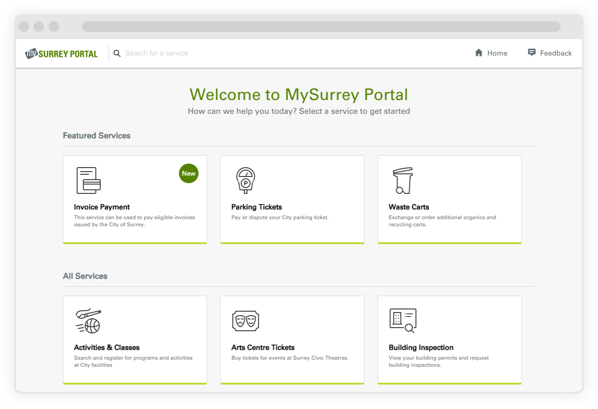
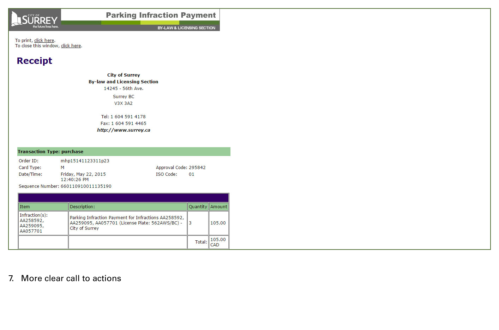
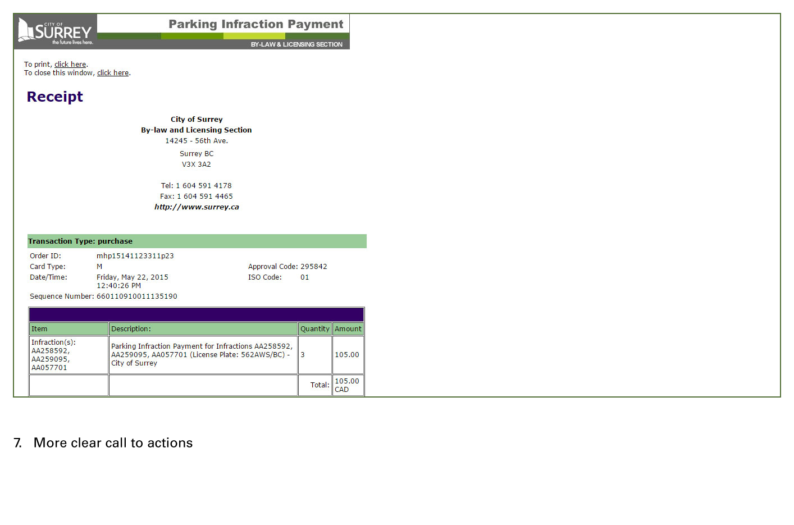

MYSURREY PORTAL
reimagining service delivery online for citizens
TYPE
Product Design, Service Design
ROLE
User Experience Designer, User Researcher, User Interface Designer
TOOLS
Sketch, InVision, Axure, Adobe Illustrator, Adobe Photoshop
MySurrey Portal is a digital service platform that aims to serve the City of Surrey (located in British Columbia, Canada) citizens by acting as a digital front counter. As a User Experience Designer, I helped translate the vision of a one-stop shop digital government from a physical service delivery to online.


OBJECTIVE
This project began with the problem of an ever growing list of city’s online services, which led to difficulty in way finding the service a citizen need.
I was brought in to first run through a series analysis and identified issues of user flows and user needs. This included gathering and understanding transactional data, as well as conducting heuristic evaluations on existing webpages and the interface of existing services. Comparisons were done to inform upper management about user pain points.

Too much text that does not speak to citizen’s natural language.
No consistency and standards to cue citizens on their tasks.
It is not efficient to use due to lack of hierarchy in content and actions on task.
 

Afterwards, my team and I discovered that there are many types of transactional services. However, they were all grouped together on a single page, with not sense of filter options or content specifically tailored to accommodate the large range of customers. Therefore customers often got overwhelmed online and would rather complete their transaction through other channels (such as by phone or in-person).


Once informations were gathered, organized, communicated and agreed upon, the design team had better knowledge about our target audiences. I then began making wireframes and user flows to demonstrate potential ideas of a portal platform to meet user needs. By having a dropdown filter and large buttons with simple icons and text-titles, it allows less proficient users to easily access the type of service they need. After iterations, mockups were created for development.

To execute this product, I work with diverse team members including User Experience Designers, Graphic Designers, Communication Strategists, Quality Assurance, Developers, Business Analysts, Security, and other stakeholders to ensure smooth deliverables.
The portal has now been released as beta for a year, but the design cycle has just begun. More services are being added and redesigned, where improvements are happening on a quarterly-base. Throughout the iteration process, I also facilitate workshops to enhance interactive data gathering sessions, as well as conduct user research to better understand our stakeholders’ business and user needs. MySurrey Portal currently acts under a guest version, while a Single Sign On component would be added shortly.